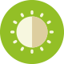
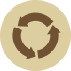
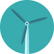

> Save the environment <


Bright.eco stands for the development of alternative drive systems whether electric, hydrogen or other drives which will help us to save the environment.

Did you already have a look at the .eco community and their verification for the .eco homepages? Read more about them on 

Find out more about me and my projects on https://max-z.de. Feel free to contact me.